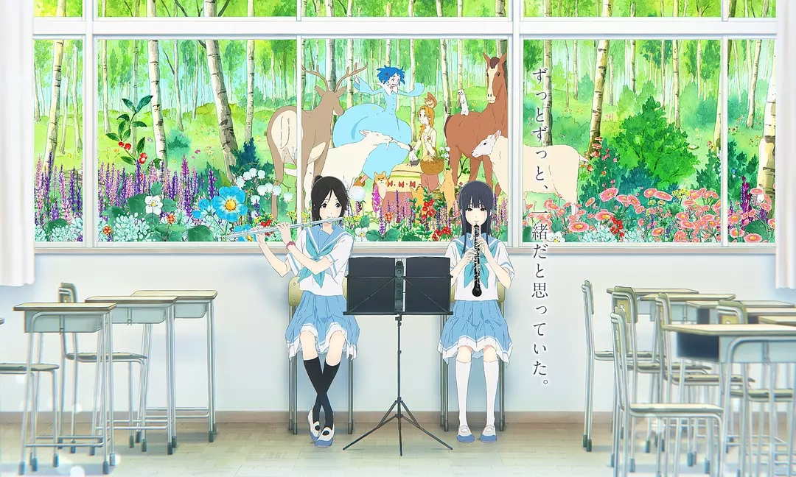
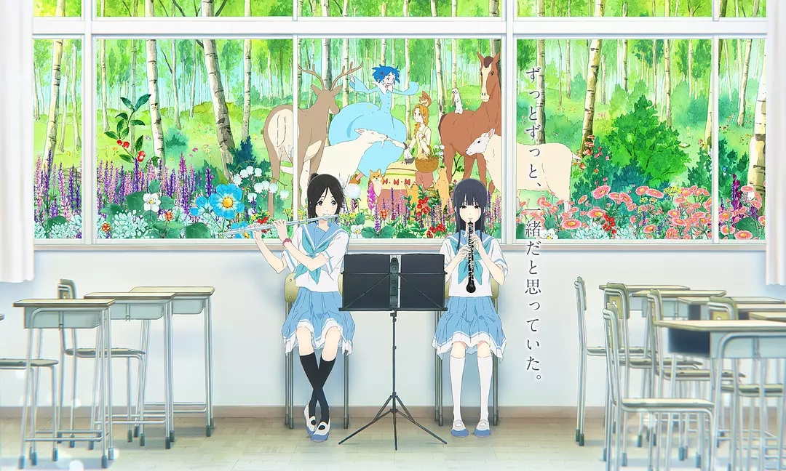

My Favorite Animes
I want to share some pictures from my favorite animes to you. I watched them last few years, and they are my precious memory. Can you guess which works they come from?

I want to share some pictures from my favorite animes to you. I watched them last few years, and they are my precious memory. Can you guess which works they come from?
